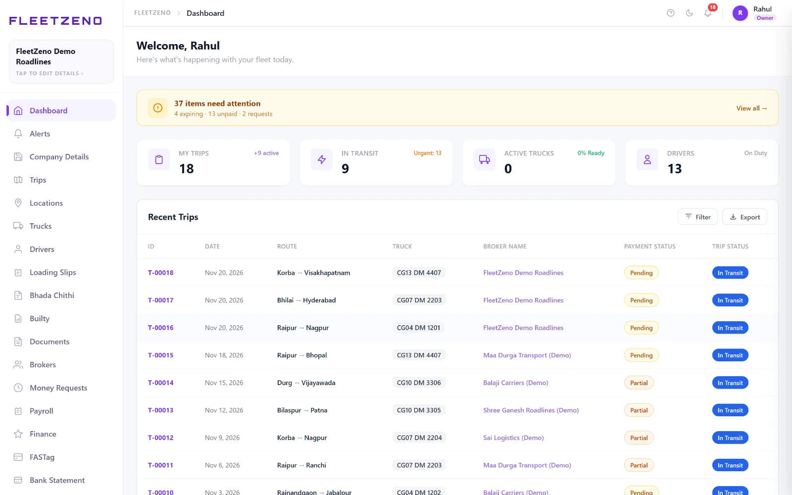

Data Scientist · GenAI · Gurugram, India
GenAI that holds up in production.
I'm Rahul. I design agentic and multi-RAG pipelines for healthcare at Cognitio Analytics, and before that shipped forecasting, search and LLM products for e-commerce. AI a domain expert can audit; results a business can measure.
Selected work
Built outside the day job
Side projects where I take an idea from research to a working product. Open a row for the details.
01FleetZenoLogistics · SaaS
An operating system for Indian transport companies: trips, trucks, drivers, brokers and money in one place, with a driver app in every cab.
- Three surfaces, one API: an owner web dashboard, an Expo React Native app for drivers, and an admin portal to run the platform.
- Real transport paperwork handled natively: loading slips, bhada chithi, builty, FASTag, payroll and money requests.
- Live driver locations, expiry alerts and role-based permissions, with company data isolated per tenant and idempotent writes for flaky mobile networks.
Node.js · Express · Sequelize · PostgreSQL · Redis · React · Vite · Expo
Private repository. Screens show a seeded demo company, not real customer data.

02ClaimSetuHealthcare · Finance
Hospital claims intelligence: catch avoidable insurer deductions before filing, and win back the rest.
- Payer rules engine compares every deduction with what the payer's terms allowed; the gap becomes the appeal.
- Review queue ranked by expected recovery, with a claim workspace and appeal editor.
- Analytics and story builder for payer scorecards, denial patterns and negotiation packs.
React · TypeScript · ECharts · Node.js · Express
Private repository. Screens show a demo dataset of about 400 synthetic claims.


03Connectome ConstellationOpen source · Research tooling
A general-purpose literature map: turn any body of research papers into an interactive 3D graph of how the field clusters, connects and where it is thin.
- Not tied to one field or one paper set. The demo corpus is 244 network-neuroscience papers, which resolve into 9 schools of thought and 21,285 keyword links.
- Louvain-detected communities, bridge papers by betweenness, and a research-gap analysis.
- Evidence table and PRISMA flow for systematic-review work.
- Research copilot grounded in the corpus, running on a local LLM through Ollama.
React · TypeScript · Three.js · Vite · Ollama

04NiryatTrade compliance
An AI operations platform for Indian export trade compliance.
- Scored five regulated domains and chose export compliance; mapped 20+ opportunities and the competition.
- Platform architecture for matching each shipment's chain of filings and running review cases.
- Pilot audit tool in Python that writes a findings workbook for reviewers.
Python · research · systems design
Private repository. Not yet validated with customers; paid pilot audits are the next step.

Search · NLP
DocuSearch
AI document search over chunked documents, with transformer embeddings and a vector database.
Python · Flask · Hugging Face · Milvus
View on GitHub →Computer vision
Self-Driving Car
End-to-end steering model following NVIDIA's paper, run on datasets or a live camera feed.
TensorFlow · OpenCV
View on GitHub →NLP pipeline
Disaster Response
ETL and ML pipeline that classifies real disaster messages so relief agencies can respond faster.
Python · scikit-learn · Flask
View on GitHub →Experience
Applied ML, end to end
From research prototypes to client-facing systems: architecture, data, models and the stakeholder presentation at the end.
Feb 2025 – present · Gurugram
Cognitio Analytics
Data Scientist
- Agentic GenAI clinical coding. Architected and led a multi-level RAG system whose hierarchical search mirrors expert coders and returns auditable, evidence-backed codes. 92%+ accuracy 85%+ auto-coded
- Automated annotation and onboarding pipeline. Two manual steps (labelling, then validation) became coder validation of a random 25% sample, about four times the throughput. Onboarding went from a month to a week. −75% time −67% staff
- Hybrid multi-RAG for clinical classification. Parallel retrievers beat the single-RAG baseline. 70% → 90%+
- Model portfolio. Delivered 10+ deep-learning, NER and ML models (regression and classification) and trained small language models (SLMs) across ICD-10-CM, Malaysian Medical Association (MMA), ICD-10 WHO, ICNP and GMDN. 92%+ avg schema accuracy 80%+ encoding rate
- Python · PySpark · LLMs · SLMs · deep learning · NER · vector databases · agentic AI · hybrid RAG
Nov 2023 – Feb 2025 · Bangalore
ConvertCart
Data Scientist
- Demand forecasting engine using a hybrid LSTM, across multiple e-commerce clients. 95% accuracy · MAPE ≈ 5%
- Email send-time optimisation for campaigns. +25% opens
- Hybrid search and LLM chatbot with RAG over enterprise knowledge bases.
- Churn prediction flagged at-risk clients with 85% accuracy; retention outreach saved a quarter of them. 25% saved −15% churn
- Python · PySpark · LSTM · LLMs · vector databases · hybrid RAG
Aug 2022 – Aug 2023 · Bangalore
AlphaStream.ai
Member of Technical Staff, Intern
- Fine-tuned LLMs (BioMegatron, BERT) over 30 million biomedical papers, with error detection and correction.
- Biomedical NER and relation extraction to build interaction graphs between entities.
- DocuSearch backend in Flask and Hugging Face Transformers.
How I work
Three rules I build by
Auditable over magical
Every suggestion should show its evidence. In healthcare and finance, a model nobody can check is a model nobody uses.
Measure what the business feels
Onboarding days, open rates, money recovered. Model scores matter only when they move one of these.
Own the whole path
Data pipelines, retrieval, evaluation, the interface and the stakeholder demo. The hard part is usually between the pieces.
Toolkit
What I reach for
GenAI and ML
Frameworks
Data
Cloud and code
Education
B.Tech, Computer Science
Lovely Professional University · 2019–2023
Certifications
TensorFlow Developer · Data Scientist Nanodegree · NLP
Google · Udacity · Coursera, all 2021.
Contact